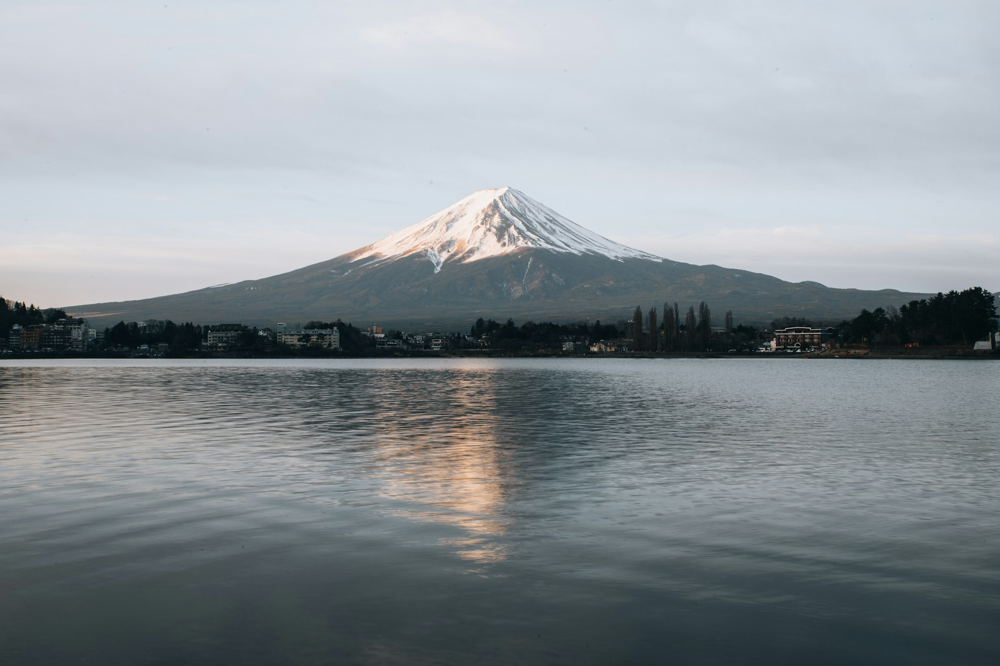

旅
东京 · 河口湖 2026
Tokyo Trip 2026
全部行程 (10天) All Days (10D) Day 1-3 东京 Day 1-3 Tokyo Day 4-5 河口湖 Day 4-5 Fuji Day 6-10 核心 Day 6-10 Main ★ 必看核心 ★ Highlights 住宿 Stays 订票 Booking 预算 Budget

東京 · 富士
东京 · 河口湖 2026 · 旅行手册
Tokyo & Kawaguchiko 2026 Handbook
2026年10月3日 – 10月12日 · 2人 · 槟城出发 · 富士山之旅
Oct 3 – Oct 12, 2026 · 2 Travelers · From Penang
十天行程速览
10-Day Quick Glance
⚠️ 日本体育之日三连休提醒 (10/10 - 10/12)：
10/10（六）至 10/12（一）是日本三连休连假。人潮拥挤景点集中在 10/5、10/8、10/9 平日完成。河口湖也排在连休前平日，避开挤爆人潮。
Oct 10-12 is a Japanese 3-day holiday weekend. Major crowded sights are scheduled on weekdays (Oct 5, 8, 9) and Kawaguchiko is kept on weekday to avoid traffic.
HK Express 香港快运 (订位代号：ICDEFN | 票种：Essential)
HK Express Booking: ICDEFN (Essential)
行程 Leg 航班号 Flight 起飞与抵达 Departure & Arrival 舱等与备注 Fare Class & Notes
去程 Outbound UO769 | UO848
03 Oct (六) 01:00 槟城 (PEN)03 Oct (六) 14:45 抵达 成田 (NRT Terminal 2)
舱等: Z | U
回程 Inbound UO629 | UO746
12 Oct (一) 02:20 羽田 (HND Terminal 3)12 Oct (一) 15:40 返抵 槟城 (PEN)
舱等: W | Z
💡 航班与交通精准说明：
去程 14:45 落地成田 T2，搭乘 16:08/16:28 的 Keisei Skyliner (41分钟) 直达京成上野，再换乘 10 分钟计程车 (~¥1,500) 直达公寓，第一天轻松省力！
Land at NRT T2 at 14:45. Take 16:08/16:28 Skyliner to Keisei-Ueno (41 mins), then a 10-min taxi to Ryusen Airbnb.
3.1 东京基地：Yoin TOKYO in Asakusa (32号房)
3.1 Tokyo Base: Yoin TOKYO in Asakusa (Room 32)
预订平台 Platform
Airbnb (Superhost, 评分 5.0)
房型与面积 Room Size
32号房 · 27㎡ · 2 Single Beds (两张独立单人床)
详细地址 Address
台东区竜泉 (LUXURY STAY HOTEL Asakusa Ryusen)
预订日期 Dates
10月3日 – 10月12日 (共 9 晚)
总费用 Total Price
RM 3,734 (约 RM 415 / 晚)
取消政策 Cancellation
免费取消至 10月2日
🌟 选此房源关键优势：
拥有两张独立单人床、27㎡超宽敞空间、内含独立洗衣机（可少带一半衣服）、自带电梯，且免费取消政策保障弹性。
3.2 河口湖：東横INN 富士河口湖大橋 (1晚)
3.2 Kawaguchiko: Toyoko Inn Fuji Kawaguchiko Ohashi
入住日期 Dates
10月6日 – 10月7日 (1 晚)
地址位置 Address
山梨県南都留郡富士河口湖町船津 294-1
预估价格 Price
约 ¥12,300 – 18,900 / 2人 (含自助早餐)
接驳车 Shuttle
免费接驳车 ：河口湖站 ⇄ 饭店 7分钟 (无需预约)
🗻 为什么保留东京公寓并过夜河口湖：
10/6 晚上东京公寓继续保留，大行李箱安心存放在东京，仅带随身小背包前往河口湖！清晨 05:30 步行 10 分钟即达河口湖大桥观赏赤富士。
4.1 交通卡：Welcome Suica Mobile 4.1 Welcome Suica Mobile
iPhone 用户可在出发前加入 Apple Wallet 开卡储值，无需实体卡押金，有效期 180 天。进出站直接感应刷卡。
iPhone users can add Welcome Suica directly to Apple Wallet before departure for seamless transit.
⚠️ 专属票券注意：
Skyliner 机场特快与河口湖高速巴士需单独购票，Suica 卡无法直接刷卡乘车。
4.2 驻地交通特性：台东区竜泉 4.2 Transit from Ryusen Base
车站 Station 步行距离 Walk 直达热门目的地 Direct Destination
三ノ轮站 (Minowa) 6 分钟
日比谷线直达：上野 (4m)、秋叶原 (8m)、筑地 (18m)、银座 (20m)、六本木 (28m)
入谷站 (Iriya) 10 分钟
日比谷线 (⚠️ 无下行手扶梯，拖大行李建议走三ノ轮站)
浅草站 (Asakusa) 16 分钟
银座线 (起点站必有座去涩谷) · 都营浅草线 (直达羽田机场)
日 程
DAILY ITINERARY (DAYS 1 - 10)
Day 1 · 10月3日 (六) 14:45 落地成田 T2 · 入住安顿 · 晚间3大B Plan Day 1 · Oct 3 Land NRT 14:45 & Base Check-in 成田 T2 (14:45) → Skyliner (16:08) → 上野 → 计程车至公寓 → 晚间弹B Plan NRT T2 14:45 Land → Skyliner → Taxi to Ryusen
低强度 Low
🛬
14:45 - 15:45
14:45 落地成田机场 T2 (UO848) · 办理入境与提取行李 14:45 Touchdown NRT T2 & Customs
下机后预留 45-60 分钟完成海关入境与行李提取，并在地下 1 楼 (B1) 柜台取换 Skyliner 实体车票。
🚆
16:08 - 16:50
搭乘 Keisei Skyliner 特快：成田 T2 $\rightarrow$ 京成上野 Skyliner Express: NRT T2 to Keisei-Ueno
直达特快只需 41 分钟 (¥2,580/人，提前网订优惠价 ¥2,310)。每 20 分钟一班。 Skyliner 直达 41m
🚕
17:00 - 17:15
京成上野站搭乘计程车 $\rightarrow$ 竜泉公寓 (推荐带长辈) Taxi Keisei-Ueno to Ryusen Airbnb
车程约 2.3 km (8–10 分钟，车费约 ¥1,300 – ¥1,600)。避免下飞机拖两件大行李在地地下盲目换乘地铁，轻松直达大门。 ★ 舒适推荐
🏠
17:30
入住 Yoin TOKYO in Asakusa 32号房 (电子锁自助手续) Check-in Yoin TOKYO Asakusa
输入智能门锁密码入住，放好大行李，熟悉两张单人床与电梯环境。 台东区竜泉3丁目
🌟
18:30 - 21:00
【Day 1 晚间 3 大弹性 B Plan 备选方案】 Day 1 Evening 3 B-Plan Options
方案 B1 (拍照看景) ：浅草寺夜间点灯散步 (日落点灯至23:00，幽静无人，计程车5分钟)。方案 B2 (舒缓机疲) ：曙汤 (Akebono-yu) 或 寿汤 (Kotobuki-yu) 泡传统日式温泉钱汤 (¥520/人)。方案 B3 (夜间烟火) ：上野不忍池夜景 & 阿美横町夜间海鲜屋台。
Day 1 预估花费 (2人)
Keisei Skyliner 优惠特快票 (2人) ¥4,620
京成上野至公寓计程车 ¥1,500
超市/钱汤与串烧晚餐 ¥4,000
单日小计 ¥10,120
Day 2 · 10月4日 (日) 浅草清晨 ★ · 晴空塔 (全程徒步 / 3大B Plan) Day 2 · Oct 4 Early Asakusa & Skytree Scenic Walk 全程徒步: 公寓 (1.3km) → 浅草寺 (0.5km) → 隅田公园 (1.2km) → 晴空塔 (或选B Plan) Flat Scenic Walk: Base → Sensoji → River Walk → Skytree
中强度 Mid
⛩️
06:30 - 08:30
【主路线 徒步段一：1.3km】公寓 $\rightarrow$ 浅草寺清晨漫步 ★ Walk Leg 1: Base to Sensoji (1.3km)
清晨沿着国际通平坦大道南行 16 分钟即达。7点前雷门、本堂、五重塔几乎完全没人，光线极佳。(浅草寺本堂 06:30 开门，Google 4.6★)。 ★ 住处红利 必去
🍡
08:30 - 11:30
仲见世街小吃 · 花月堂菠萝面包 · 午餐大黑家天妇罗 Nakamise Bakery & Lunch
品尝浅草花月堂巨型菠萝面包 (09:00开门，Google 4.4★)。11:00 享用大黑家天妇罗盖饭 (Google 3.8★) 或尾张屋荞麦面 (Google 4.1★)。
🚶
11:30 - 13:00
【主路线 徒步段二&三：1.7km】隅田公园 $\rightarrow$ SUMIDA RIVER WALK 水上步道 $\rightarrow$ 晴空塔 Walk Leg 2&3: River Walk & Mizumachi (1.7km)
跨过 SUMIDA RIVER WALK 水上步道，沿着 Mizumachi 运河绿荫公园咖啡馆散步至晴空塔。
🌟
13:30 - 18:00
【Day 2 降雨/避挤 3 大弹性 B Plan 备选方案】 Day 2 Rain/Crowd Avoidance B-Plans
方案 B1 (室内光影/极受欢迎) ：teamLab Planets TOKYO 丰洲触感水上光影展 (全室内，裸足踏水与浮空兰花花园，Google 4.7★)。方案 B2 (零体力/游船看景) ：隅田川观光水上巴士 (浅草码头 $\rightarrow$ 台场/滨离宫，在玻璃船舱内看东京湾与彩虹大桥)。方案 B3 (室内观景/老街) ：浅草文化观光中心 8F 免费展望台 (隈研吾设计，俯瞰浅草全景) & 合羽桥道具街。
Day 2 预估花费 (全程徒步)
交通费 (去程0元徒步，回程短途/计程车) ¥0 – ¥1,200
花月堂菠萝面包与大黑家午餐 (2人) ¥4,500
运河咖啡与 Solamachi 晚餐 ¥5,500
单日小计 ¥10,000 – ¥11,200
Day 3 · 10月5日 (一) 上野 · 阿美横町 · 谷根千 Day 3 · Oct 5 Ueno & Yanesen 上野公园 → 阿美横町小吃 → 谷中银座老街 Ueno Park, Ameyoko & Yanaka
中强度 Mid
🌳
09:30 - 12:00
日比谷线 4 分钟至上野 · 上野公园与不忍池 Ueno Park & Shinobazu Pond
漫步上野公园、东照宫、不忍池弁天堂。(⚠️ 星期一为日本博物馆休馆日，排全户外行程)。 日比谷线 4m
🍢
12:30 - 14:30
阿美横町 (Ameyoko) 街头小吃与药妆采买 Ameyoko Market Street Food
品尝水果串、海鲜小吃、松本清与 OS Drug 药妆补货。
🐈
15:00 - 18:00
谷中银座 (Yanaka Ginza) 老街下町风情 Yanaka Ginza Historic Street
山手线一站至日暮里。逛老街、夕阳阶梯 (夕焼けだんだん) 喝咖啡看猫咪。 谷根千
Day 4 · 10月6日 (二) 出发河口湖 · 忍野八海 Day 4 · Oct 6 Kawaguchiko Side Trip 大行李留在东京 → 高速巴士 → 忍野八海 → 大石公园夕阳 Express Bus & Oishi Park Sunset
中强度 Mid
🚌
08:00 - 10:00
东京站八重洲南口搭乘高速巴士至河口湖 Highway Bus to Kawaguchiko
大行李留在东京公寓，只带随身小背包轻装出发！车程约 2 小时 (¥2,300/人)。 轻装出游
🍜
11:30 - 15:30
饭店寄包 · 馓子面 (ほうとう) · 忍野八海 Houtou Noodles & Oshino Hakkai
乘饭店免费接驳车至東横INN寄包，享用山梨名物味噌宽面，搭乘接驳车至忍野八海。 忍野八海
🌅
16:00 - 18:00
大石公园赏富士山夕阳 · 饭店大浴场 Oishi Park Fuji Sunset
搭红线周游巴士至大石公园看富士山落日，回饭店 Check-in 泡大浴场。
Day 5 · 10月7日 (三) 河口湖清晨富士山 ★★ → 回东京 Day 5 · Oct 7 Dawn Fuji & Return 05:30 步至河口湖大桥看赤富士 → 14:00 巴士返东京 Kawaguchiko Bridge Dawn to Tokyo
中强度 Mid
🌄
05:15 - 07:00
步行至河口湖大桥观赏清晨赤富士 ★★ Dawn "Red Fuji" at Kawaguchiko Bridge
从东横INN步行 10-12 分钟即达！日出时刻 (约05:45) 阳光洒在富士山峰呈现粉红色赤富士，绝不可错过！(⚠️ 清晨约 10-12°C 保暖外套必带)。 ★★ 核心体验 必早起
🍱
07:30 - 10:00
饭店自助早餐 · 10:00 前办理退房 Hotel Breakfast & Check-out
享用免费和洋自助早餐，行李寄放柜台，湖畔轻松散步。
🚌
14:00 - 17:00
搭乘高速巴士返回东京站 · 重返基地 Highway Bus Return to Tokyo
返回东京站，日比谷线回竜泉公寓。晚上附近吃拉面早休。
Day 6 · 10月8日 (四) 筑地 · 银座 · 增上寺与东京铁塔 ★ Day 6 · Oct 8 Tsukiji, Ginza & Tokyo Tower 海鲜早午餐 → 银座百货散步 → 增上寺 & 芝公园草坪看东京铁塔点灯 🗼 Tsukiji Seafood, Ginza & Tokyo Tower Spot
中强度 Mid
🐟
09:30 - 11:30
日比谷线 18 分钟至筑地场外市场 Tsukiji Outer Market Brunch
品尝新鲜海鲜丼、玉子烧、烤生蚝。(排周四避开周三与周日休店)。 日比谷线直达
🛍️
12:00 - 15:30
银座中央通散步 · GINZA SIX · 伊东屋 Ginza Central Avenue & GINZA SIX
逛顶级百货 Ginza Six、文具殿堂伊东屋 (Itoya)，喝下午茶。
🗼
16:00 - 18:00
增上寺 (Zojo-ji) & 芝公园草坪看东京铁塔点灯 ★ Zojo-ji Temple & Shiba Park Tokyo Tower
从银座搭乘日比谷线 2 站至神谷町/大门站。在古朴的增上寺大殿前拍摄黑木古寺与鲜红东京铁塔同框，随后步至芝公园草坪坐下休息，看 17:00 铁塔橙红暖光准时点亮。免排队登塔且拍照视角最佳！ ★ 顶级免费视角 必去
🍶
18:30 - 20:00
有乐町高架下居酒屋 / 银座美食晚餐 Yurakucho Izakaya or Ginza Dinner
体验高架桥下烟火气居酒屋，餐后日比谷线 20 分钟直达回竜泉公寓。
Day 6 预估花费 (2人)
地铁一日来回车资 ¥800
筑地场外市场早午餐 ¥4,500
银座下午茶与有乐町晚餐 ¥6,000
单日小计 ¥11,300
Day 7 · 10月9日 (五) 明治神宫 · 涩谷 · 涩谷SKY ★ Day 7 · Oct 9 Shibuya & Shibuya SKY 明治神宫林荫 → 竹下通 → 涩谷十字路口 → 16:20 涩谷SKY Meiji Shrine, Harajuku & Sunset SKY
高强度 High
🌲
09:30 - 11:30
明治神宫森林参道散步 Meiji Jingu Shrine Walk
从浅草走至银座线起点站乘车去表参道。感受巨大鸟居与高耸森林。 银座线起点
🏙️
12:00 - 15:30
原宿竹下通 → 表参道 → 涩谷十字路口 Harajuku & Shibuya Scramble
吃原宿可丽饼，散步至涩谷十字路口俯瞰繁华人潮。
🌅
16:20 - 18:30
涩谷SKY 展望台 ★ (日落黄昏 17:15) Shibuya SKY Sunset Deck
229 米高空露天展望台，360 度俯瞰东京与夕阳！(⚠️ 9/24 23:00 准时抢 16:20 入场票)。 ★ 必抢门票
Day 8 · 10月10日 (六) 清澄白河 · 门前仲町 Day 8 · Oct 10 Kiyosumi Shirakawa 三连休第一天 · 避开爆满景点 · 咖啡街与庭园低调日 Coffee Street & Quiet Garden
低强度 Low
☕
10:00 - 12:30
清澄白河精品咖啡一条街 · 清澄庭园 Kiyosumi Coffee & Garden
造访 Blue Bottle 日本一号店与独立手冲店，清澄庭园回游式水石散步。
🍚
13:00 - 16:30
门前仲町深川饭 · 月岛文字烧 Fukagawa Rice & Monjayaki
品尝东京名物深川蛤蜊饭，或月岛文字烧老街散步。
Day 9 · 10月11日 (日) 全天休息采买 → 赴羽田 ★ Day 9 · Oct 11 Rest & Airport Transfer 公寓保留至离境 · 18:00 洗澡小睡打包 → 21:45 赴羽田 Rest at Base & Haneda Transfer
低强度 Low
🛍️
10:00 - 17:00
睡到自然醒 · 附近药妆与伴手礼最后采买 Late Wakeup & Final Souvenir Shopping
轻松漫步，补齐所有要买的伴手礼与零食。
🛁
18:00 - 21:30
返回公寓洗澡 · 小睡 · 整理大行李 ★ Rest, Shower & Pack at Base
这是刻意保留第 9 晚公寓的最佳用途！上飞机前彻底洗澡躺平休息 2 小时，整理完行李再惬意出发。 ★ 舒压神功
🚇
21:45 - 23:00
都营浅草线直达羽田机场 T3 航厦 Direct Transit to Haneda T3
从浅草站搭乘都营浅草线直达羽田 T3，23:00 抵达准备办理出境。 浅草线直达
Day 10 · 10月12日 (一) 02:20 起飞 → 15:40 抵槟 Day 10 · Oct 12 02:20 Flight → 15:40 PEN 羽田 (HND T3) 02:20 起飞 → 香港 (HKG) → 15:40 返抵槟城 (PEN) Haneda to Penang via Hong Kong
返程 Return
✈️
02:20 - 15:40
HK Express UO629 02:20 羽田 T3 起飞 $\rightarrow$ 15:40 抵槟城 02:20 Flight HND T3 → 15:40 PEN Land
顺利搭机返抵槟城 (PEN)，10/13 - 10/14 充裕缓冲休息，10/15 正式开工。
河口湖 2D1N
KAWAGUCHIKO SPECIAL GUIDE
6.1 为什么选择过夜而非当日往返 Why Overnight Stay Matters
对比项目 Item 当日往返 Day Trip 过夜 1 晚 (推荐) Overnight Stay
清晨富士山 ❌ 9:30 抵达时常已被云遮挡
✅ 05:30 独享无云赤富士
体力负担 高 (单日来回 4-5 小时车程)
低 (轻松拆解为两天)
💡 气候提示：
10月是全年空气最干燥、富士山能见度极高月份。10/7 05:30 在河口湖大桥迎日出是整趟核心体验。
8.1 固定支出 (已确定 / 预估) Fixed Expenses HK Express 槟城往返机票 (Essential 2人) RM 5,208
东京 Airbnb 9 晚住宿 (Room 32) RM 3,734
河口湖東横INN 1晚 + 往返巴士 (2人) 约 RM 750
固定支出小计 RM 9,692
8.2 在地花费预估 (2人) Local Expenses Estimate Skyliner 机场特快 (2人) ¥4,620
东京地铁与交通 (Suica 9天) ¥14,000
涩谷SKY 门票 (2人) ¥5,000
每日餐饮 (¥8,000 × 8 天) ¥128,000
门票与杂费 ¥15,000
在地花费合计 ¥166,620 (约 RM 4,340)
预估总额 (2人总计) RM 14,032 (约 RM 7,016 / 人)
提 醒
TIPS & CRITICAL REMINDERS
💡 实用备忘手册 Practical Travel Notes
🧥 气温与穿着：
东京日间 20-24°C、早晚 15-18°C。河口湖清晨仅 10-12°C 且湖风大，厚外套必带！
👴 长辈随行提示：
入谷站无下行手扶梯，拖大行李一律走三ノ轮站；便利店厕所及时使用；每天安排公园或咖啡馆歇脚。
— 終 —